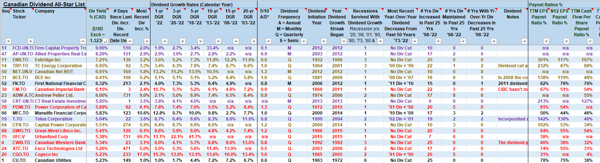
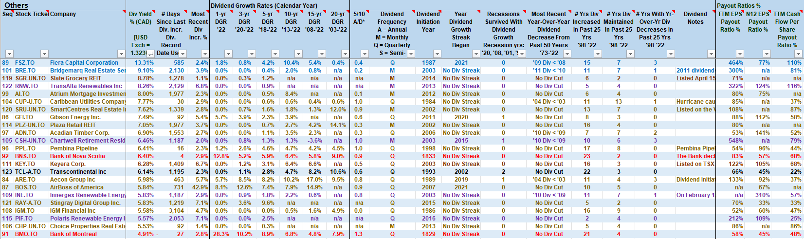

Summary
The investment goals are to combine the stability of dividends with the growth of stocks into an investing strategy that will be
profitable over the long run. The key is choosing stocks with strong financials which can give a good dividend with divident growth
even in bad times.
Reference Material
Purchasing Strategy.
Our purchasing strategy involves finding high quality stocks with a high dividend yield and dividend yield growth. For a list of high quality dividend yielding stocks, see the
Canadian Dividend All-Star List. This
list shows stocks which have not cut their dividend over a long period of time. The list also contains financial information about the companies. If you
want to study the historical data for dividends of a particular stock, you can go to yahoo finance, choose a company, and select historical data.
For instance, for the company Canadian Utilities (CU.TO), the historical data of that company's dividend yield can be found
here.
Generally, we want to select high dividend yielding stocks with dividend yield growth with strong financials which include:
- Low debt. The debt/equity ratio should not be more than 50%.
- Cash flow. The cash flow of the company after taxes is at least three times the amount of interest it pays.
- Annual earnings. The annual earnings growth should be consistent, and it should be in the 5%-10% range, at a minimum.
- Payout ratio. Don't forget that dividends are paid from earnings, so you should be sure that dividends are a modest
percentage of earnings (this is known as the payout ratio, earnings divided by dividends). The payout ratio should be less than
60% for nearly all stocks except qualifying utilities, publicly traded partnerships, and Real Estate Investment Trusts.
- Creditworthiness. In the Standard and Poor's ranking system, a stock must have a minimum credit rating of BBB+ to qualify.
Exiting before a Recession - Recession Indicators.
An inverted yield curve is a good predictor of a recession. There are other recession indicators which can be studied alongside the yield curve.
They are as follows:
- Inverted Yield Curve (Leading): When short-term interest rates exceed long-term rates, it signals tighter credit conditions and often predicts recessions 6-18 months ahead.
- The Sahm Gap (Unemployment) (Lagging/Coincident): Measures the rise in unemployment above its recent low, reliably confirming that a recession has already started.
- Personal Consumption Expenditures (Lagging/Coincident): Tracks consumer spending, which makes up ~70% of GDP, and typically weakens only once a recession is underway.
- Building Permits (Leading): Reflects future housing construction activity, usually declining months before broader economic downturns.
- Industrial Production (Coincident/Leading): Captures real output of manufacturing, mining, and utilities, often turning negative just as or shortly before a recession begins.
- Credit Spreads/Corporate Bond Spreads (Leading): The difference between yields on corporate bonds (esp. BBB or high-yield) and U.S.
Treasuries of similar maturity. A widening spread signals rising credit risk and tighter financial conditions, often preceding recessions
by several months. The Baa-Treasury spread is a common choice.
- Initial Jobless Claims (Leading): Weekly measure of new unemployment insurance claims. Spikes in claims tend to occur before the unemployment
rate rises, making this a more forward-looking labor market measure. Sharp rises usually precede recessions by 3-6 months.
- ISM New Orders Index/Purchasing Managers' Surveys (Leading): Forward-looking component of the ISM Manufacturing PMI. "New Orders" often
contracts before overall activity, capturing demand shifts before they show up in industrial production or GDP. Below 50 suggests contraction ahead.
- Consumer Expectations Index (Leading): Forward-looking sentiment measure from the University of Michigan or Conference Board surveys.
Consumers often reduce spending in anticipation of tougher times, showing up in expectations before actual PCE slows. A sharp drop in
consumer expectations often precedes recessions.
- Money Supply Growth, Real M2 / Liquidity Measures (Leading): Tracks the growth of real money supply (commonly M2, adjusted for inflation).
Historically, contractions or sharp slowdowns in real money supply growth have preceded recessions by 6-12 months. This reflects tighter
credit conditions and reduced liquidity available for spending and investment. In the U.S., real M2 growth turned negative well before the
2001, 2008, and 2020 recessions.
Reentering the Market - Stock Market Volatility.
Stock market volatility is exceptionally high during a recession. Typically, the stock market will not start its trek to new highs until volatility happens
reduced. It is sweet to enter the market during a recession, because one can purchase very good stocks for low prices. The question is, how long should we
wait before reentering. Typically, once volatility has dropped to 40% of the peak, one could consider reentering the market. Just keep in mind, the ride
might still be long and arduous before real gains are seen. If you have chosen high yielding stocks with strong financials, your stock will give you
cash flow and will probably outperform the market as the market recovers. The volatility index can be found
here.
Scanning for Stocks, an Example
Let us perform a stock scan based on the Canadian Dividend All Star List June 30, 2023.
We will use five criteria:
- Dividend yield. Must be greater than or equal to 5%.
- Dividend yield growth. Must be greater than or equal to 5%.
- Dividend cuts from the past 50 years. Should be 0.
- Earnings per share payout ratio. Should be less than 100%, preferably less than 80%.
- Cash flow per share payout ratio. Should be less than 100%, preferably less than 80%.
The following image highlights all stocks with a dividend yield of 5% or greater.

The colour codes reflect the Brazilian Jui Jitsu belt coloring code (white, blue, purple, brown, black, red).
- Stocks with meet one criteria are highlighted in blue.
- Stocks which meet two criteria are highlighed in purple.
- Stocks which meet three criteria are highlighed in brown.
- Stocks which meet four criteria are highlighed in black.
- Stocks which meet all five criteria are highlighed in red.
There are another set of stocks under the Others tab, highlighted in the following image:

We would usually purchase stocks in red or black. These would be:
- FN.TO: First National Financial,
- CM.TO: Canadian Imperial Bank of Commerce,
- POW.TO: Power Corporation of Canada,
- MFC.TO: Manulife Financial,
- GWO.TO: Great-West Lifeco,
- UFC.V: Urbanfund Corporation,
- CWB.TO: Canadian Western Bank,
- XTC.TO: Exco Technologies
- CGO.TO: Cogeco Inc.,
- CU.TO: Canadian Utilities,
- EMA.TO: Emera Incorporated,
- BNS.TO: Bank of Nova Scotia,
- TCL-A.TO: Transcontinental Inc.,
- BMO.TO: Bank of Montreal.